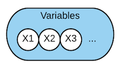
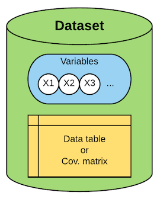
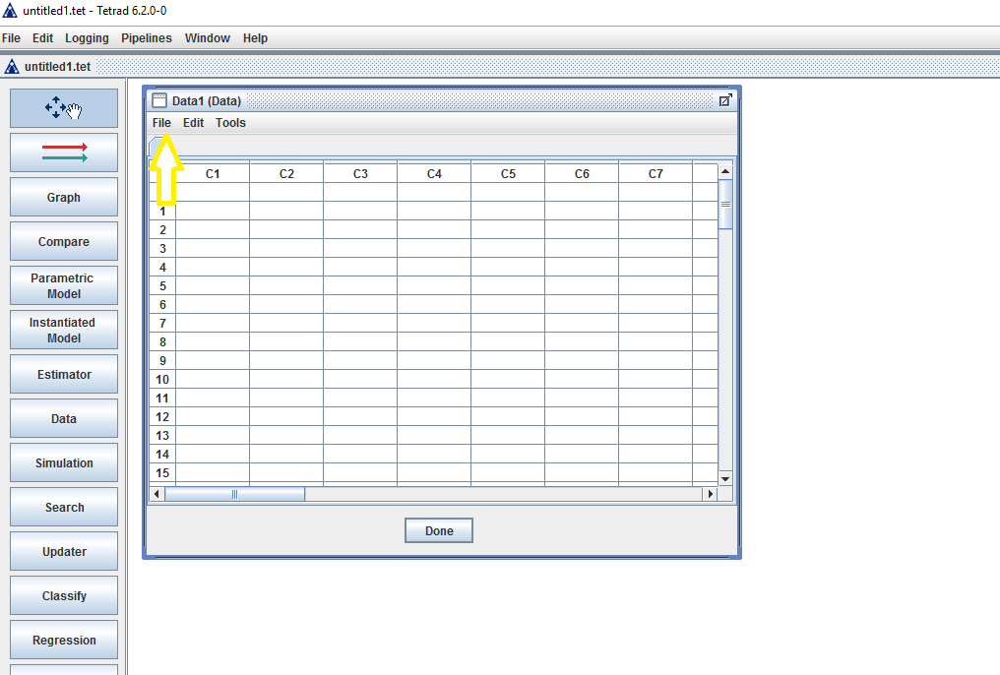
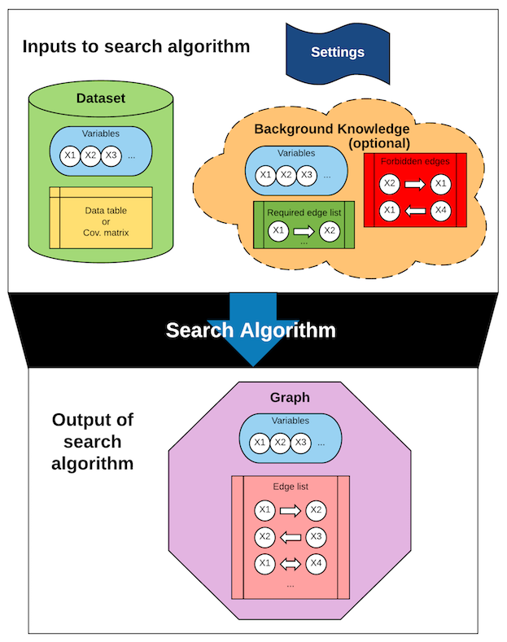
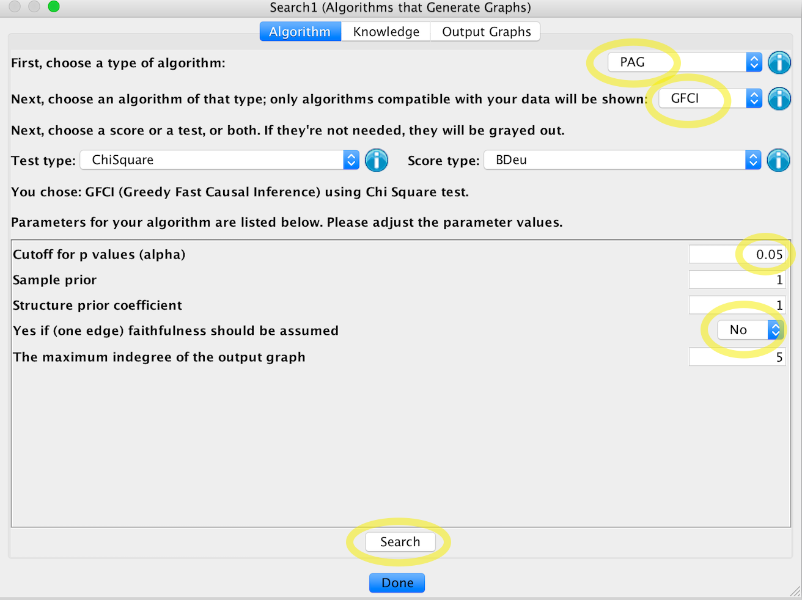
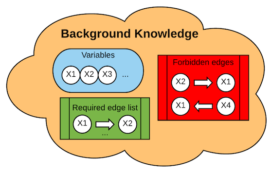
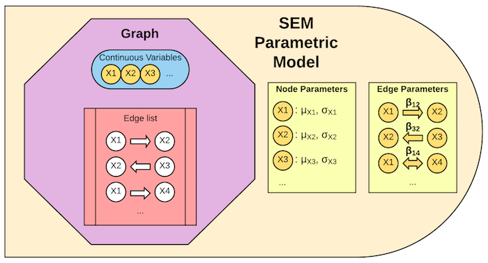
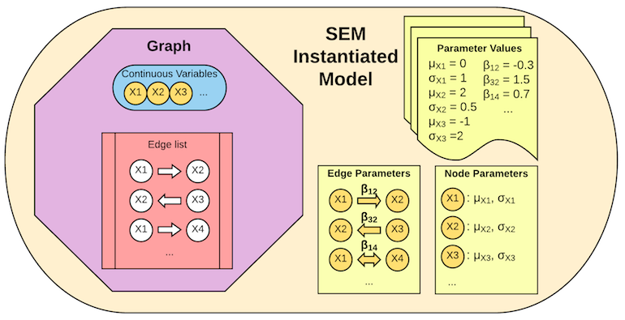

Tetrad Tutorial
Calvin and Hobbes, Bill Watterson, April 19, 1988, (source).1
Table of Contents
Tetrad includes a huge variety of tools for causal inference. It has been under development since the early 90s. The algorithms in Tetrad were designed by many people, but the vast majority of the implementation was done by Joe Ramsey.
Things you can do with Tetrad
When people say 'causal inference', they mean lots of different things. Here are some things you might want to do with Tetrad:
- You have a dataset, and:
- You want to learn the causal graph that describes what causes what ("search")
- You want to test whether a specific variable causes a target variable, and if so, what is the size of the effect
- You want to find the set of variables that affects some target of interest ("feature selection")
- You want to predict what will happen if you intervene on some variable
- You want to find a set of experiments that are likely to produce large effects (on one or more targets)
- You have a dataset and a known causal graph, and:
- You want to estimate the strength of a particular causal effect, or all of them
- You want to evaluate how well the search algorithms recover your graph from the data
- You want to evaluate how well your graph fits your data, and maybe find other structures that fit better
- You have a search algorithm, and you want to evaluate how well it recovers causal graphs from synthetic data ("simulation")
All of these tasks can be called 'causal inference'.
Despite their differences, these tasks share many components. For example, if you're learning a graph or evaluating a search algorithm, you need a search function. Tetrad is modular: it lets you mix and match components to do many different kinds of causal inference. This modularity makes Tetrad powerful, but difficult to understand without first understanding the basic components.
To understand what is possible with Tetrad, let's talk about what it contains.
What's under the hood
Tetrad is written in Java, an object-oriented programming language. Tetrad uses the following kinds of objects:2
Variables = Nodes = Vertices

Causal inference is a scientific discovery problem, so random variables are the basic objects. Variables are identified with "nodes" or "vertices" in causal graphs.3
In other graph software, you first create a graph, then populate it with nodes; if the graph disappears the nodes do too. By contrast, in Tetrad the nodes are basic objects. You can build multiple graphs over the same set of nodes. This represents the scientific problem: we start out knowing what the variables are, and we learn the causal relationships among them.
Variables can be discrete- or continuous-valued in Tetrad. This distinction matters for search algorithms.
How they're made: You create new variables when you load your data into Tetrad, create a random graph, or create a new graph by hand (with no input).
Examples
Schematic Example: our set of variables might be {Sunscreen, Temperature, Ice-cream}.
Datasets

Datasets in Tetrad include two parts: a set of variables V, and either a set of observations of all of those variables in the form of a data table X, or else a covariance matrix over the variables Σ.
How they're made: You create a dataset when you load your data into Tetrad, or generate data from an instantiated model.
Examples
Schematic Example: our dataset might look something like this table of observations:
Variables: {Sunscreen, Temperature, Ice-cream}
Data:
| Person/Date |
Sunscreen |
Temperature |
Ice-cream |
| Hemank, June 12 |
0ml |
32°C |
150g |
| Mahdi, June 12 |
15ml |
32°C |
120g |
| Benedict, June 14 |
30ml |
36°C |
200g |
| ... |
... |
... |
... |
Or this correlation matrix:
Variables: {Sunscreen, Temperature, Ice-cream}
Data:
|
Sunscreen |
Temperature |
Ice-cream |
| Sunscreen |
1 |
0.3 |
0.12 |
| Temperature |
0.3 |
1 |
0.4 |
| Ice-cream |
0.12 |
0.4 |
1 |
.
GUI example:
In this example we'll load a 'mixed' data set, a data set that contains both discrete and continuous values.
To create a dataset object in Tetrad, do the following:
| Step | Screenshots |
|---|
| 1. Place a data box on the work space; double click to open it. |  |
| 2. Click "file" and then "load" in the drop down menu and the data loader window will appear. |  |
| 3. Choose a file to load. |  |
| 4. Make sure the loading options are set according to your file properties and click "Validate". |  |
| 5. Click "Load" if there are no errors. |  |
| 6. The loaded data will appear in the data loader window. |  |
Graphs

A graph G is a set of nodes, V, and a set of edges, E. Each edge has four pieces of information: a pair of nodes and a pair of endpoints, in order. For example, the edge (A, B, -, >) represents the edge A → B, whereas the edge (C, B, >, >) represents the edge C ↔ B. This makes Tetrad's graph representation very flexible: it can represent undirected edges, bidirected edges, unusual endpoint types, etc. The edge A → B can be interpreted as "A has a direct causal effect on B"; the other kinds of edges are explained elsewhere in the manual.
How they're made: There are three ways to create graphs in Tetrad: by hand, using a random graph generator, or using a search algorithm.
Example
Schematic Example: If our causal graph looks like this: Sunscreen ← Temperature → Ice-cream, it would be represented in Tetrad like so:
Variables: {Sunscreen, Temperature, Ice-cream}
Edges:
{(Sunscreen, Temperature, >, -),
(Temperature, Ice-cream, -, >)}
Search algorithms

Why the word "search"? You can think about the discovery problem like this. We start with a set of variables; out of all the graphs you can make with those variables, we are searching for the one graph that describes the true causal relationships between those variables.
How many graphs are we looking through?
| Number of variables |
Number of Directed Acyclic Graphs |
| 1 |
1 |
| 2 |
3 |
| 3 |
25 |
| 4 |
543 |
| 5 |
29281 |
| 6 |
3781503 |
| ... |
... |
| 20 |
more than the number of atoms in the observable universe |
This is why we need an algorithm to search, rather than inspecting all the graphs by hand. Search algorithms use various tricks to find the answer quickly, without inspecting every single graph.
How they're made: A search algorithm is a function: it takes input and produces output. The inputs are:
- A dataset (required)4; note that this includes the variable set
- Background knowledge about the causal relationships (optional)
- Other settings, like tuning parameters, which depend on the specific algorithm
The output is a graph, or a set of graphs that are equally compatible with the data (a.k.a. an "equivalence class" of graphs). The type of graph you get depends on the type of algorithm you use.
Example
GUI example:
| Step |
Screenshots |
| 1. Put a Search box in the workspace, and add an arrow from the Data box to the Search box. |
 |
| 2. (a) Choose output type (here a PAG). (b) Choose an algorithm (here GFCI). (c) Choose parameters (here alpha = 0.05, and "one-edge faithfulness" = "no"). (d) Click "search". |
 |
| 3. Your results will pop up. If you wish, you can drag the variables into a nicer layout. Then click "Done". |
 |
Knowledge

As mentioned in the Search Algorithms section, we can use background knowledge as an input to search. Tetrad represents knowledge as a set of variables, a list of forbidden edges5 and a list of required edges.
How they're made: You might think of knowledge as being independent of everything else – that's what makes it "background" knowledge! However, Tetrad won't let you create a knowledge object without giving it input: a dataset or search algorithm that tells it the names of your variables. Only then can you list the forbidden and required edges. It is as if Tetrad is asking, "knowledge about what?"
Example
Schematic Example: Say we know that neither ice-cream nor sunscreen can influence the temperature. We would represent this as a pair of forbidden edges. In Tetrad the knowledge would be represented like so:
Variables: {Sunscreen, Temperature, Ice-cream}
Forbidden Edges:
{(Sunscreen, Temperature, -, >),
(Ice-cream, Temperature, -, >)}
Required Edges: {}
Parametric & Instantiated models
Causal graphs only give us qualitative information: which variables causally influence which others. But they don't tell us quantitatively how big the causal effects are. They put constraints on the probability distribution over variables in the graph, but they don't fully specify the probability distribution. For that, we need models.
Causal models add information to the graph: they specify a probability distribution, and the distributions you'd get if you intervened on some of the variables.
We need models for several distinct tasks:
- Given data and a graph we trust, we fit a model to learn the size of the causal effects.
- Given data and a graph we wish to evaluate, we fit and then test a model to see how well that graph can describe our data.
- Given a graph, we specify a model so we can generate synthetic data from that graph, which we can then use to evaluate a search algorithm.
Tetrad has two confusing distinctions between types of model object. Here they are in one table:
|
Bayes model |
Structural Equation Model (SEM) |
| Parametric Model |
Graph (DAG) where the nodes are discrete variables, each with a set of possible values |
Graph (DAG) where the nodes are continuous variables (means and variances initialized but not assigned values), plus a set of linear parameters (coefficients initialized but not assigned values) |
| Instantiated model |
Probabilities assigned to the possible values of each variable, conditional on its parents in the graph |
Values assigned to all parameters of linear structural equation model (means, variances, and edge coefficients) |
Tetrad distinguishes between parametric models and instantiated models. The parametric model just initializes the object: it's where you decide what kind of model you're going to use (Bayes or SEM parameterization). The instantiated model then assigns values to the model parameters.
Bayes PMs and IMs

"Bayes model" just means the model fits discrete-valued data. It has no special relationship to Bayesian inference6. Tetrad uses the term "Bayes model" only because DAGs for discrete data have been called "Bayes nets" (again, not because they have a special relationship to Bayesian inference).
A Bayes Parametric Model (Bayes PM) object includes a graph, and a set of possible values for every variable in that graph. The graph must be a DAG.
How Bayes PMs are made: You can start with a DAG and a dataset. Tetrad will automatically pull the lists of possible values from the actual values in your data. If you want to generate synthetic data, you can start with just a DAG. Tetrad will ask for a set of possible values for each variable (the default is {0,1}).

A Bayes Instantiated Model (Bayes IM) object includes everything that's in a Bayes PM, plus a set of conditional probability tables – one for each node, conditional on its parents in the DAG.
How Bayes IMs are made: You can start with a Bayes PM and a dataset, in which case Tetrad will estimate the conditional probabilities from your data. If you want to generate synthetic data, you can start with a Bayes PM and specify the conditional probabilities (either by choosing them randomly, or inputting specific values by hand).
SEM PMs and IMs

"Structural Equation Models" or SEMs are used to fit continuous-valued data, under some assumption about the relationships between the variables. In Tetrad you may fit either "standard" (i.e. linear Gaussian) or "generalized" SEMs.
A linear model means the relationships between the variables can be described with linear equations. For example, if we have the graph X → Y ← Z, we could describe this as the standard SEM parametric model:
\(X = \varepsilon_1 \\
Z = \varepsilon_2 \\
Y = \alpha X + \beta Z + \varepsilon_3\)
Where the errors \(\varepsilon_1, \varepsilon_2, \varepsilon_3\) are independent random variables with Gaussian distributions.
A SEM Parametric Model (SEM PM) includes the graph, plus a list of all parameters needed to specify the probability distribution. In this example, the parameters are \(\alpha, \beta, \mu_{\varepsilon_1}, \mu_{\varepsilon_2}, \mu_{\varepsilon_3}, \sigma_{\varepsilon_1}, \sigma_{\varepsilon_2}\), and \(\sigma_{\varepsilon_3}\). However, in the SEM PM object the values of those parameters are undetermined; the values are specified in the instantiated model (see below).
If you choose a generalized SEM PM, you have the freedon to specify non-linear relationships between parent and child variables, and a non-Gaussian distribution for each node. For example, you might say one variable is related to its parent by a quadratic equation: \(Y = \alpha X + \beta X^2 + \varepsilon\). You could specify that the error term \(\varepsilon\) had, say, a Uniform(0,1) distribution.
Note: Although generalized SEM PMs give you more freedom than standard SEM PMs, they require you to make more decisions. You must specify the parametric form of the distribution. If you don't, Tetrad cannot learn the model from data. Right now there are no nonparametric model fitting methods in Tetrad.
How SEM PMs are made: All you need is a DAG. If you choose a standard SEM PM, Tetrad can generate the list of parameters from the DAG structure alone. If you choose a generalized SEM PM, you must also specify your parametric model.

The SEM Instantiated Model (SEM IM) assigns values to all those parameters – in this example, to \(\alpha\) and \(\beta\), and to the means and variances of the errors \(\boldsymbol{\varepsilon}\).
How SEM IMs are made: You can start with a SEM PM and a dataset, in which case Tetrad will estimate the model parameters from your data. If you want to generate synthetic data, you can start with a SEM PM and specify the parameter values (either by choosing them randomly, or inputting specific values by hand).
Other Objects
There are five other modules that I won't talk about here. See these other sections of the manual for more information:
- Comparisons between graphs
- Updaters
- Regression functions
- Classifiers
- Random graph generators
An example pipeline
Say you start with data, and you want to learn a causal model and estimate the size of the causal effects. Your workflow or "pipeline" would look like the following schema.
But take note: This schema describes what's happening inside the Tetrad library. In the graphical interface, some steps may be combined. For example, in the current7 version of the Tetrad GUI, steps 4, 5 and 6 are grouped into a single box.

In text form:
- Load your data into Tetrad, generating a Dataset object.
- Feed your data into a Search Algorithm.
- Choose search settings/assumptions that make sense, given how your data were collected.
- The output will be an equivalence class of graphs. Choose one plausible DAG from the output equivalence class.
- Choose a parametric model that makes sense for your data.
- Use your dataset to learn the parameters of the instantiated model.
You should also perform some sanity checks along the way:
After running the search algorithm: does the output graph look plausible, based on your background knowledge about the causal system? What changes if you use different search settings?
After estimating the model parameters: do the parameters look plausible? What changes if you choose a different graph from the equivalence class?
Takeaway Messages
Tetrad is a modular, object-oriented program for causal inference. "Causal inference" includes a variety of tasks; Tetrad objects can be combined in various ways to accomplish many of those tasks. This tutorial describes some of the most important objects in Tetrad. It is meant to be schematic yet independent of Tetrad's graphical user interface (which may change in the future). I have included an example of one pipeline – one way of combining Tetrad objects to achieve a particular aim – but that is only the beginning of what is possible with Tetrad.
This tutorial is an introduction to the Tetrad software. For an introduction to causal inference in general, and guidance on interpreting your results, see the companion tutorial.